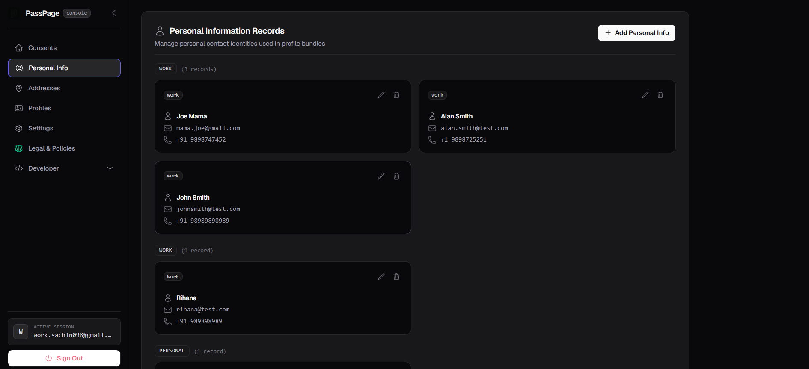
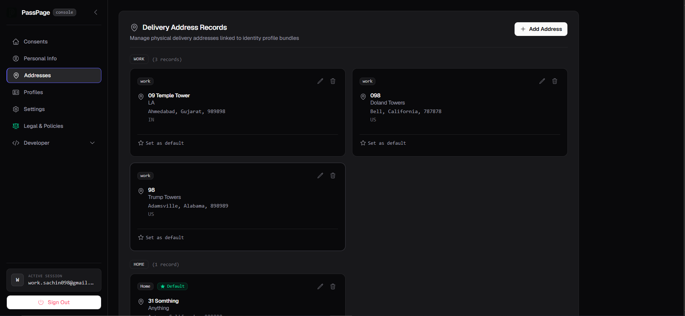
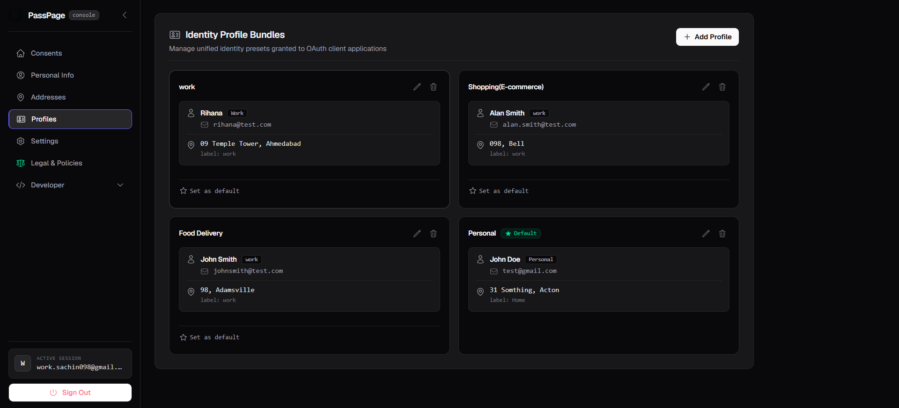
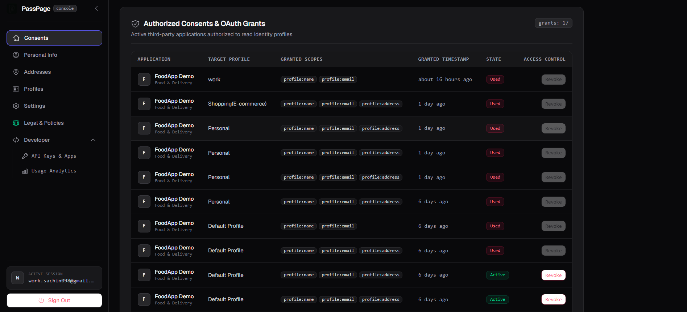
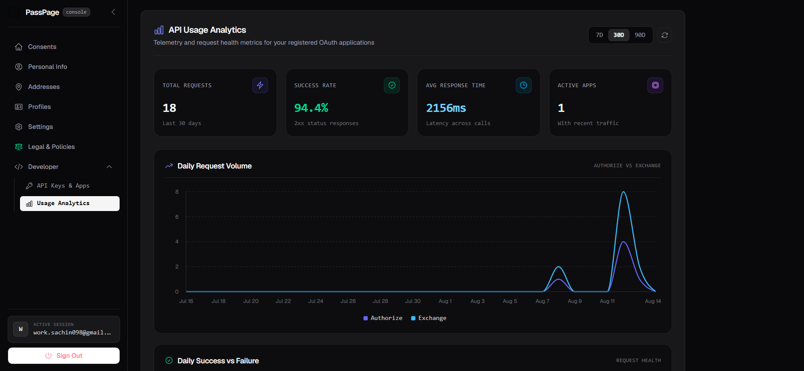

One record, several contexts.
Save more than one contact identity if you need to. A work email and a personal one, kept as separate labeled records instead of overwriting each other.
Each record holds a name, email, and phone, tagged with a label like Work or Personal, so you always know which one an app is about to use.

A real address book, not one field.
Home, work, a parent's place, wherever you actually need things delivered. Add as many as you need, and mark one default so it's ready without asking every time.
Every address is stored in full, city, state, postal code, and country, so an app never gets a half-filled record.

Bundle a contact and an address. Name it. Reuse it.
A profile pairs one personal info record with one address under a name you choose, Work, Shopping, Food Delivery, whatever fits how you actually use different apps.
When an app asks for your details, you pick which profile to share, not which fields to retype.

Every grant, in one ledger.
Which app, which profile, which fields, when, and whether it's still active. Nothing is hidden after the fact.
An active grant can be revoked at any time. A one-time grant that's already been used shows as Used, not Revoked, so you can tell a completed handshake apart from one you actually cut off.

Real numbers, from the first request.
Every registered app gets its own usage dashboard, total requests, success rate, response time, and a daily breakdown of authorize versus exchange calls.
No separate analytics tool to wire up. It's there as soon as you register your first app.

Authorize
An app opens a Passpage screen naming which fields it needs and which are optional. You pick a profile, review it, and approve.
Redirect
Passpage sends the app a short-lived, single-use code. Nothing else is in the URL.
Exchange
The app's own backend trades that code, plus its own secret, for exactly the fields you approved. Nothing more.
What revoking actually does
Revoking stops an app from receiving anything further and closes an active grant immediately, the same as revoking access in any OAuth-based system. It can't delete data an app already received before you revoked it. That's governed by the app's own privacy policy, not Passpage's.
Fill it in once. Reuse it everywhere.
Create an account, save a profile, and see how little friction the next signup actually needs.
Get started